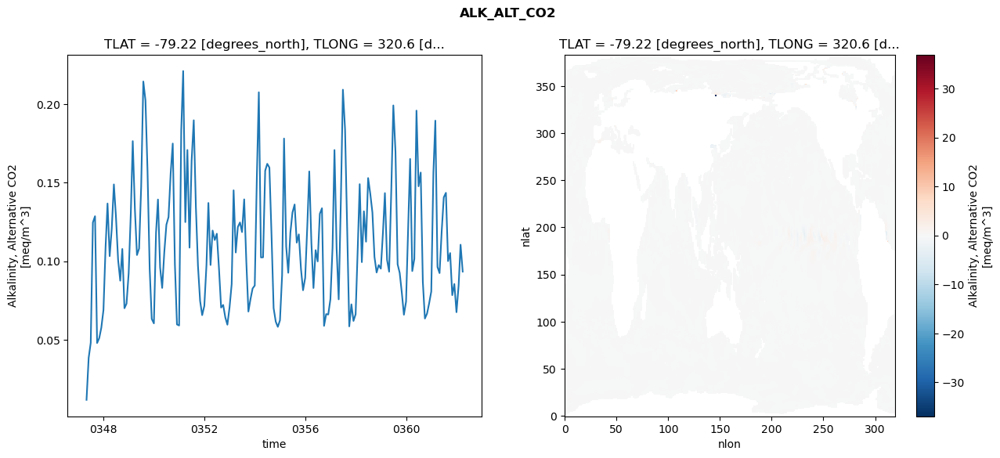
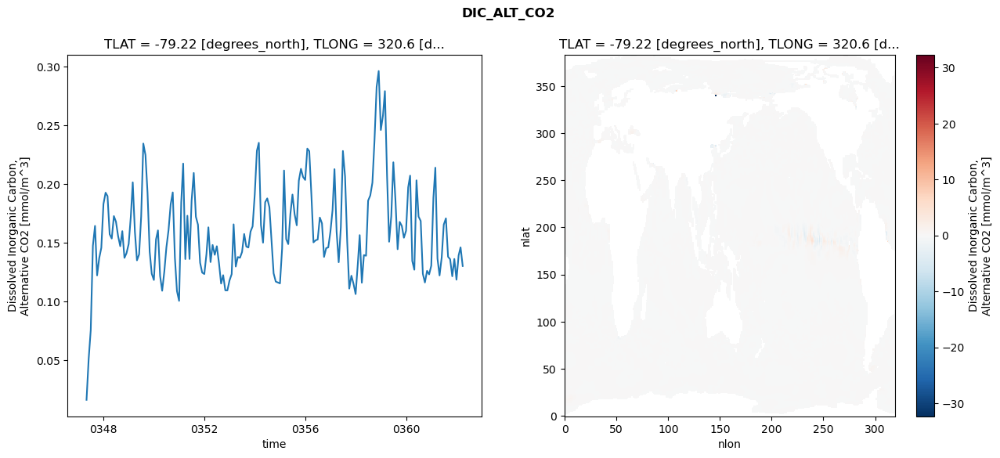
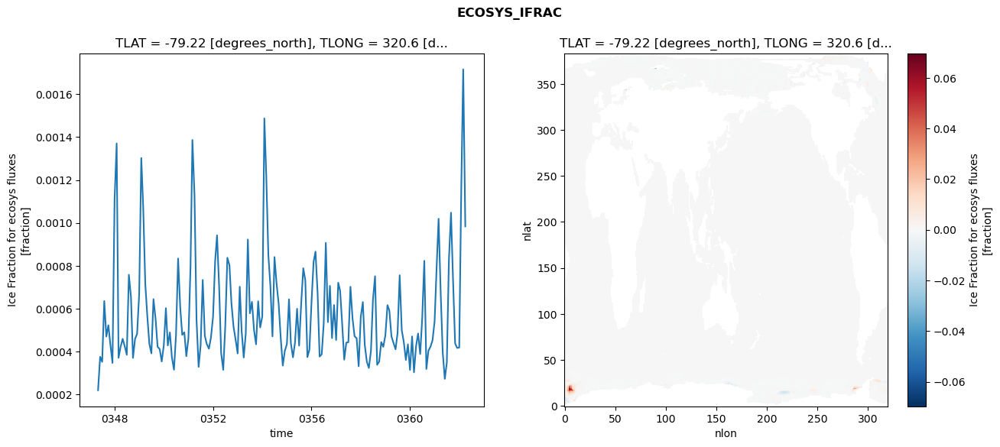
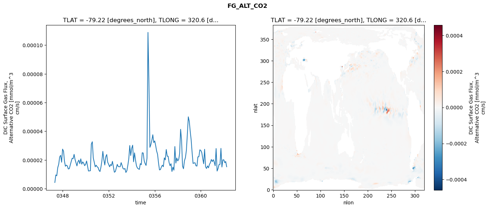

glb-dor_North_Atlantic_basin_023_1999-04-01_00093#
Simulation details#
Case: smyle.cdr-atlas-v0.glb-dor_North_Atlantic_basin_023_1999-04-01_00093.001
Basin: North_Atlantic_basin
Polygon: 23.0
Start date: 1999-04
Show code cell source Hide code cell source
import xarray as xr
import matplotlib.pyplot as plt
Show code cell source Hide code cell source
zarr_store = "/path/to/zarr/store"
# Parameters
zarr_store = "/global/cfs/projectdirs/m4746/Projects/Ocean-CDR-Atlas-v0/data/validation/smyle.cdr-atlas-v0.glb-dor_North_Atlantic_basin_023_1999-04-01_00093.001.validation.zarr"
Show code cell source Hide code cell source
%%time
ds_o = xr.open_zarr(zarr_store).compute()
ds_o
CPU times: user 648 ms, sys: 497 ms, total: 1.15 s
Wall time: 1.47 s
<xarray.Dataset> Size: 2MB
Dimensions: (nlat: 384, nlon: 320, time: 180)
Coordinates:
TLAT float64 8B -79.22
TLONG float64 8B 320.6
ULAT float64 8B -78.95
ULONG float64 8B 321.1
* time (time) object 1kB 0347-05-01 00:00:00 ... 0362-04-01 0...
z_t float32 4B 500.0
Dimensions without coordinates: nlat, nlon
Data variables:
ALK_ALT_CO2_diff (nlat, nlon) float32 492kB nan nan nan ... nan nan nan
ALK_ALT_CO2_rmse (time) float64 1kB 0.0118 0.03852 ... 0.1105 0.09337
DIC_ALT_CO2_diff (nlat, nlon) float32 492kB nan nan nan ... nan nan nan
DIC_ALT_CO2_rmse (time) float64 1kB 0.01626 0.05114 ... 0.1462 0.1303
ECOSYS_IFRAC_diff (nlat, nlon) float32 492kB nan nan nan ... nan nan nan
ECOSYS_IFRAC_rmse (time) float64 1kB 0.0002195 0.0003756 ... 0.0009837
FG_ALT_CO2_diff (nlat, nlon) float32 492kB nan nan nan ... nan nan nan
FG_ALT_CO2_rmse (time) float64 1kB 4.325e-06 9.57e-06 ... 1.525e-05xarray.Dataset
- nlat: 384
- nlon: 320
- time: 180
- TLAT()float64-79.22
- long_name :
- array of t-grid latitudes
- units :
- degrees_north
array(-79.22052261)
- TLONG()float64320.6
- long_name :
- array of t-grid longitudes
- units :
- degrees_east
array(320.56250892)
- ULAT()float64-78.95
- long_name :
- array of u-grid latitudes
- units :
- degrees_north
array(-78.95289509)
- ULONG()float64321.1
- long_name :
- array of u-grid longitudes
- units :
- degrees_east
array(321.12500894)
- time(time)object0347-05-01 00:00:00 ... 0362-04-...
- bounds :
- time_bound
- long_name :
- time
array([cftime.DatetimeNoLeap(347, 5, 1, 0, 0, 0, 0, has_year_zero=True), cftime.DatetimeNoLeap(347, 6, 1, 0, 0, 0, 0, has_year_zero=True), cftime.DatetimeNoLeap(347, 7, 1, 0, 0, 0, 0, has_year_zero=True), cftime.DatetimeNoLeap(347, 8, 1, 0, 0, 0, 0, has_year_zero=True), cftime.DatetimeNoLeap(347, 9, 1, 0, 0, 0, 0, has_year_zero=True), cftime.DatetimeNoLeap(347, 10, 1, 0, 0, 0, 0, has_year_zero=True), cftime.DatetimeNoLeap(347, 11, 1, 0, 0, 0, 0, has_year_zero=True), cftime.DatetimeNoLeap(347, 12, 1, 0, 0, 0, 0, has_year_zero=True), cftime.DatetimeNoLeap(348, 1, 1, 0, 0, 0, 0, has_year_zero=True), cftime.DatetimeNoLeap(348, 2, 1, 0, 0, 0, 0, has_year_zero=True), cftime.DatetimeNoLeap(348, 3, 1, 0, 0, 0, 0, has_year_zero=True), cftime.DatetimeNoLeap(348, 4, 1, 0, 0, 0, 0, has_year_zero=True), cftime.DatetimeNoLeap(348, 5, 1, 0, 0, 0, 0, has_year_zero=True), cftime.DatetimeNoLeap(348, 6, 1, 0, 0, 0, 0, has_year_zero=True), cftime.DatetimeNoLeap(348, 7, 1, 0, 0, 0, 0, has_year_zero=True), cftime.DatetimeNoLeap(348, 8, 1, 0, 0, 0, 0, has_year_zero=True), cftime.DatetimeNoLeap(348, 9, 1, 0, 0, 0, 0, has_year_zero=True), cftime.DatetimeNoLeap(348, 10, 1, 0, 0, 0, 0, has_year_zero=True), cftime.DatetimeNoLeap(348, 11, 1, 0, 0, 0, 0, has_year_zero=True), cftime.DatetimeNoLeap(348, 12, 1, 0, 0, 0, 0, has_year_zero=True), cftime.DatetimeNoLeap(349, 1, 1, 0, 0, 0, 0, has_year_zero=True), cftime.DatetimeNoLeap(349, 2, 1, 0, 0, 0, 0, has_year_zero=True), cftime.DatetimeNoLeap(349, 3, 1, 0, 0, 0, 0, has_year_zero=True), cftime.DatetimeNoLeap(349, 4, 1, 0, 0, 0, 0, has_year_zero=True), cftime.DatetimeNoLeap(349, 5, 1, 0, 0, 0, 0, has_year_zero=True), cftime.DatetimeNoLeap(349, 6, 1, 0, 0, 0, 0, has_year_zero=True), cftime.DatetimeNoLeap(349, 7, 1, 0, 0, 0, 0, has_year_zero=True), cftime.DatetimeNoLeap(349, 8, 1, 0, 0, 0, 0, has_year_zero=True), cftime.DatetimeNoLeap(349, 9, 1, 0, 0, 0, 0, has_year_zero=True), cftime.DatetimeNoLeap(349, 10, 1, 0, 0, 0, 0, has_year_zero=True), cftime.DatetimeNoLeap(349, 11, 1, 0, 0, 0, 0, has_year_zero=True), cftime.DatetimeNoLeap(349, 12, 1, 0, 0, 0, 0, has_year_zero=True), cftime.DatetimeNoLeap(350, 1, 1, 0, 0, 0, 0, has_year_zero=True), cftime.DatetimeNoLeap(350, 2, 1, 0, 0, 0, 0, has_year_zero=True), cftime.DatetimeNoLeap(350, 3, 1, 0, 0, 0, 0, has_year_zero=True), cftime.DatetimeNoLeap(350, 4, 1, 0, 0, 0, 0, has_year_zero=True), cftime.DatetimeNoLeap(350, 5, 1, 0, 0, 0, 0, has_year_zero=True), cftime.DatetimeNoLeap(350, 6, 1, 0, 0, 0, 0, has_year_zero=True), cftime.DatetimeNoLeap(350, 7, 1, 0, 0, 0, 0, has_year_zero=True), cftime.DatetimeNoLeap(350, 8, 1, 0, 0, 0, 0, has_year_zero=True), cftime.DatetimeNoLeap(350, 9, 1, 0, 0, 0, 0, has_year_zero=True), cftime.DatetimeNoLeap(350, 10, 1, 0, 0, 0, 0, has_year_zero=True), cftime.DatetimeNoLeap(350, 11, 1, 0, 0, 0, 0, has_year_zero=True), cftime.DatetimeNoLeap(350, 12, 1, 0, 0, 0, 0, has_year_zero=True), cftime.DatetimeNoLeap(351, 1, 1, 0, 0, 0, 0, has_year_zero=True), cftime.DatetimeNoLeap(351, 2, 1, 0, 0, 0, 0, has_year_zero=True), cftime.DatetimeNoLeap(351, 3, 1, 0, 0, 0, 0, has_year_zero=True), cftime.DatetimeNoLeap(351, 4, 1, 0, 0, 0, 0, has_year_zero=True), cftime.DatetimeNoLeap(351, 5, 1, 0, 0, 0, 0, has_year_zero=True), cftime.DatetimeNoLeap(351, 6, 1, 0, 0, 0, 0, has_year_zero=True), cftime.DatetimeNoLeap(351, 7, 1, 0, 0, 0, 0, has_year_zero=True), cftime.DatetimeNoLeap(351, 8, 1, 0, 0, 0, 0, has_year_zero=True), cftime.DatetimeNoLeap(351, 9, 1, 0, 0, 0, 0, has_year_zero=True), cftime.DatetimeNoLeap(351, 10, 1, 0, 0, 0, 0, has_year_zero=True), cftime.DatetimeNoLeap(351, 11, 1, 0, 0, 0, 0, has_year_zero=True), cftime.DatetimeNoLeap(351, 12, 1, 0, 0, 0, 0, has_year_zero=True), cftime.DatetimeNoLeap(352, 1, 1, 0, 0, 0, 0, has_year_zero=True), cftime.DatetimeNoLeap(352, 2, 1, 0, 0, 0, 0, has_year_zero=True), cftime.DatetimeNoLeap(352, 3, 1, 0, 0, 0, 0, has_year_zero=True), cftime.DatetimeNoLeap(352, 4, 1, 0, 0, 0, 0, has_year_zero=True), cftime.DatetimeNoLeap(352, 5, 1, 0, 0, 0, 0, has_year_zero=True), cftime.DatetimeNoLeap(352, 6, 1, 0, 0, 0, 0, has_year_zero=True), cftime.DatetimeNoLeap(352, 7, 1, 0, 0, 0, 0, has_year_zero=True), cftime.DatetimeNoLeap(352, 8, 1, 0, 0, 0, 0, has_year_zero=True), cftime.DatetimeNoLeap(352, 9, 1, 0, 0, 0, 0, has_year_zero=True), cftime.DatetimeNoLeap(352, 10, 1, 0, 0, 0, 0, has_year_zero=True), cftime.DatetimeNoLeap(352, 11, 1, 0, 0, 0, 0, has_year_zero=True), cftime.DatetimeNoLeap(352, 12, 1, 0, 0, 0, 0, has_year_zero=True), cftime.DatetimeNoLeap(353, 1, 1, 0, 0, 0, 0, has_year_zero=True), cftime.DatetimeNoLeap(353, 2, 1, 0, 0, 0, 0, has_year_zero=True), cftime.DatetimeNoLeap(353, 3, 1, 0, 0, 0, 0, has_year_zero=True), cftime.DatetimeNoLeap(353, 4, 1, 0, 0, 0, 0, has_year_zero=True), cftime.DatetimeNoLeap(353, 5, 1, 0, 0, 0, 0, has_year_zero=True), cftime.DatetimeNoLeap(353, 6, 1, 0, 0, 0, 0, has_year_zero=True), cftime.DatetimeNoLeap(353, 7, 1, 0, 0, 0, 0, has_year_zero=True), cftime.DatetimeNoLeap(353, 8, 1, 0, 0, 0, 0, has_year_zero=True), cftime.DatetimeNoLeap(353, 9, 1, 0, 0, 0, 0, has_year_zero=True), cftime.DatetimeNoLeap(353, 10, 1, 0, 0, 0, 0, has_year_zero=True), cftime.DatetimeNoLeap(353, 11, 1, 0, 0, 0, 0, has_year_zero=True), cftime.DatetimeNoLeap(353, 12, 1, 0, 0, 0, 0, has_year_zero=True), cftime.DatetimeNoLeap(354, 1, 1, 0, 0, 0, 0, has_year_zero=True), cftime.DatetimeNoLeap(354, 2, 1, 0, 0, 0, 0, has_year_zero=True), cftime.DatetimeNoLeap(354, 3, 1, 0, 0, 0, 0, has_year_zero=True), cftime.DatetimeNoLeap(354, 4, 1, 0, 0, 0, 0, has_year_zero=True), cftime.DatetimeNoLeap(354, 5, 1, 0, 0, 0, 0, has_year_zero=True), cftime.DatetimeNoLeap(354, 6, 1, 0, 0, 0, 0, has_year_zero=True), cftime.DatetimeNoLeap(354, 7, 1, 0, 0, 0, 0, has_year_zero=True), cftime.DatetimeNoLeap(354, 8, 1, 0, 0, 0, 0, has_year_zero=True), cftime.DatetimeNoLeap(354, 9, 1, 0, 0, 0, 0, has_year_zero=True), cftime.DatetimeNoLeap(354, 10, 1, 0, 0, 0, 0, has_year_zero=True), cftime.DatetimeNoLeap(354, 11, 1, 0, 0, 0, 0, has_year_zero=True), cftime.DatetimeNoLeap(354, 12, 1, 0, 0, 0, 0, has_year_zero=True), cftime.DatetimeNoLeap(355, 1, 1, 0, 0, 0, 0, has_year_zero=True), cftime.DatetimeNoLeap(355, 2, 1, 0, 0, 0, 0, has_year_zero=True), cftime.DatetimeNoLeap(355, 3, 1, 0, 0, 0, 0, has_year_zero=True), cftime.DatetimeNoLeap(355, 4, 1, 0, 0, 0, 0, has_year_zero=True), cftime.DatetimeNoLeap(355, 5, 1, 0, 0, 0, 0, has_year_zero=True), cftime.DatetimeNoLeap(355, 6, 1, 0, 0, 0, 0, has_year_zero=True), cftime.DatetimeNoLeap(355, 7, 1, 0, 0, 0, 0, has_year_zero=True), cftime.DatetimeNoLeap(355, 8, 1, 0, 0, 0, 0, has_year_zero=True), cftime.DatetimeNoLeap(355, 9, 1, 0, 0, 0, 0, has_year_zero=True), cftime.DatetimeNoLeap(355, 10, 1, 0, 0, 0, 0, has_year_zero=True), cftime.DatetimeNoLeap(355, 11, 1, 0, 0, 0, 0, has_year_zero=True), cftime.DatetimeNoLeap(355, 12, 1, 0, 0, 0, 0, has_year_zero=True), cftime.DatetimeNoLeap(356, 1, 1, 0, 0, 0, 0, has_year_zero=True), cftime.DatetimeNoLeap(356, 2, 1, 0, 0, 0, 0, has_year_zero=True), cftime.DatetimeNoLeap(356, 3, 1, 0, 0, 0, 0, has_year_zero=True), cftime.DatetimeNoLeap(356, 4, 1, 0, 0, 0, 0, has_year_zero=True), cftime.DatetimeNoLeap(356, 5, 1, 0, 0, 0, 0, has_year_zero=True), cftime.DatetimeNoLeap(356, 6, 1, 0, 0, 0, 0, has_year_zero=True), cftime.DatetimeNoLeap(356, 7, 1, 0, 0, 0, 0, has_year_zero=True), cftime.DatetimeNoLeap(356, 8, 1, 0, 0, 0, 0, has_year_zero=True), cftime.DatetimeNoLeap(356, 9, 1, 0, 0, 0, 0, has_year_zero=True), cftime.DatetimeNoLeap(356, 10, 1, 0, 0, 0, 0, has_year_zero=True), cftime.DatetimeNoLeap(356, 11, 1, 0, 0, 0, 0, has_year_zero=True), cftime.DatetimeNoLeap(356, 12, 1, 0, 0, 0, 0, has_year_zero=True), cftime.DatetimeNoLeap(357, 1, 1, 0, 0, 0, 0, has_year_zero=True), cftime.DatetimeNoLeap(357, 2, 1, 0, 0, 0, 0, has_year_zero=True), cftime.DatetimeNoLeap(357, 3, 1, 0, 0, 0, 0, has_year_zero=True), cftime.DatetimeNoLeap(357, 4, 1, 0, 0, 0, 0, has_year_zero=True), cftime.DatetimeNoLeap(357, 5, 1, 0, 0, 0, 0, has_year_zero=True), cftime.DatetimeNoLeap(357, 6, 1, 0, 0, 0, 0, has_year_zero=True), cftime.DatetimeNoLeap(357, 7, 1, 0, 0, 0, 0, has_year_zero=True), cftime.DatetimeNoLeap(357, 8, 1, 0, 0, 0, 0, has_year_zero=True), cftime.DatetimeNoLeap(357, 9, 1, 0, 0, 0, 0, has_year_zero=True), cftime.DatetimeNoLeap(357, 10, 1, 0, 0, 0, 0, has_year_zero=True), cftime.DatetimeNoLeap(357, 11, 1, 0, 0, 0, 0, has_year_zero=True), cftime.DatetimeNoLeap(357, 12, 1, 0, 0, 0, 0, has_year_zero=True), cftime.DatetimeNoLeap(358, 1, 1, 0, 0, 0, 0, has_year_zero=True), cftime.DatetimeNoLeap(358, 2, 1, 0, 0, 0, 0, has_year_zero=True), cftime.DatetimeNoLeap(358, 3, 1, 0, 0, 0, 0, has_year_zero=True), cftime.DatetimeNoLeap(358, 4, 1, 0, 0, 0, 0, has_year_zero=True), cftime.DatetimeNoLeap(358, 5, 1, 0, 0, 0, 0, has_year_zero=True), cftime.DatetimeNoLeap(358, 6, 1, 0, 0, 0, 0, has_year_zero=True), cftime.DatetimeNoLeap(358, 7, 1, 0, 0, 0, 0, has_year_zero=True), cftime.DatetimeNoLeap(358, 8, 1, 0, 0, 0, 0, has_year_zero=True), cftime.DatetimeNoLeap(358, 9, 1, 0, 0, 0, 0, has_year_zero=True), cftime.DatetimeNoLeap(358, 10, 1, 0, 0, 0, 0, has_year_zero=True), cftime.DatetimeNoLeap(358, 11, 1, 0, 0, 0, 0, has_year_zero=True), cftime.DatetimeNoLeap(358, 12, 1, 0, 0, 0, 0, has_year_zero=True), cftime.DatetimeNoLeap(359, 1, 1, 0, 0, 0, 0, has_year_zero=True), cftime.DatetimeNoLeap(359, 2, 1, 0, 0, 0, 0, has_year_zero=True), cftime.DatetimeNoLeap(359, 3, 1, 0, 0, 0, 0, has_year_zero=True), cftime.DatetimeNoLeap(359, 4, 1, 0, 0, 0, 0, has_year_zero=True), cftime.DatetimeNoLeap(359, 5, 1, 0, 0, 0, 0, has_year_zero=True), cftime.DatetimeNoLeap(359, 6, 1, 0, 0, 0, 0, has_year_zero=True), cftime.DatetimeNoLeap(359, 7, 1, 0, 0, 0, 0, has_year_zero=True), cftime.DatetimeNoLeap(359, 8, 1, 0, 0, 0, 0, has_year_zero=True), cftime.DatetimeNoLeap(359, 9, 1, 0, 0, 0, 0, has_year_zero=True), cftime.DatetimeNoLeap(359, 10, 1, 0, 0, 0, 0, has_year_zero=True), cftime.DatetimeNoLeap(359, 11, 1, 0, 0, 0, 0, has_year_zero=True), cftime.DatetimeNoLeap(359, 12, 1, 0, 0, 0, 0, has_year_zero=True), cftime.DatetimeNoLeap(360, 1, 1, 0, 0, 0, 0, has_year_zero=True), cftime.DatetimeNoLeap(360, 2, 1, 0, 0, 0, 0, has_year_zero=True), cftime.DatetimeNoLeap(360, 3, 1, 0, 0, 0, 0, has_year_zero=True), cftime.DatetimeNoLeap(360, 4, 1, 0, 0, 0, 0, has_year_zero=True), cftime.DatetimeNoLeap(360, 5, 1, 0, 0, 0, 0, has_year_zero=True), cftime.DatetimeNoLeap(360, 6, 1, 0, 0, 0, 0, has_year_zero=True), cftime.DatetimeNoLeap(360, 7, 1, 0, 0, 0, 0, has_year_zero=True), cftime.DatetimeNoLeap(360, 8, 1, 0, 0, 0, 0, has_year_zero=True), cftime.DatetimeNoLeap(360, 9, 1, 0, 0, 0, 0, has_year_zero=True), cftime.DatetimeNoLeap(360, 10, 1, 0, 0, 0, 0, has_year_zero=True), cftime.DatetimeNoLeap(360, 11, 1, 0, 0, 0, 0, has_year_zero=True), cftime.DatetimeNoLeap(360, 12, 1, 0, 0, 0, 0, has_year_zero=True), cftime.DatetimeNoLeap(361, 1, 1, 0, 0, 0, 0, has_year_zero=True), cftime.DatetimeNoLeap(361, 2, 1, 0, 0, 0, 0, has_year_zero=True), cftime.DatetimeNoLeap(361, 3, 1, 0, 0, 0, 0, has_year_zero=True), cftime.DatetimeNoLeap(361, 4, 1, 0, 0, 0, 0, has_year_zero=True), cftime.DatetimeNoLeap(361, 5, 1, 0, 0, 0, 0, has_year_zero=True), cftime.DatetimeNoLeap(361, 6, 1, 0, 0, 0, 0, has_year_zero=True), cftime.DatetimeNoLeap(361, 7, 1, 0, 0, 0, 0, has_year_zero=True), cftime.DatetimeNoLeap(361, 8, 1, 0, 0, 0, 0, has_year_zero=True), cftime.DatetimeNoLeap(361, 9, 1, 0, 0, 0, 0, has_year_zero=True), cftime.DatetimeNoLeap(361, 10, 1, 0, 0, 0, 0, has_year_zero=True), cftime.DatetimeNoLeap(361, 11, 1, 0, 0, 0, 0, has_year_zero=True), cftime.DatetimeNoLeap(361, 12, 1, 0, 0, 0, 0, has_year_zero=True), cftime.DatetimeNoLeap(362, 1, 1, 0, 0, 0, 0, has_year_zero=True), cftime.DatetimeNoLeap(362, 2, 1, 0, 0, 0, 0, has_year_zero=True), cftime.DatetimeNoLeap(362, 3, 1, 0, 0, 0, 0, has_year_zero=True), cftime.DatetimeNoLeap(362, 4, 1, 0, 0, 0, 0, has_year_zero=True)], dtype=object) - z_t()float32500.0
- long_name :
- depth from surface to midpoint of layer
- positive :
- down
- units :
- centimeters
- valid_max :
- 537500.0
- valid_min :
- 500.0
array(500., dtype=float32)
- ALK_ALT_CO2_diff(nlat, nlon)float32nan nan nan nan ... nan nan nan nan
- cell_methods :
- time: mean
- grid_loc :
- 3111
- long_name :
- Alkalinity, Alternative CO2
- units :
- meq/m^3
array([[ nan, nan, nan, ..., nan, nan, nan], [ nan, nan, nan, ..., nan, nan, nan], [-0.03833008, -0.03613281, -0.02807617, ..., nan, nan, nan], ..., [ nan, nan, nan, ..., nan, nan, nan], [ nan, nan, nan, ..., nan, nan, nan], [ nan, nan, nan, ..., nan, nan, nan]], dtype=float32) - ALK_ALT_CO2_rmse(time)float640.0118 0.03852 ... 0.1105 0.09337
- cell_methods :
- time: mean
- grid_loc :
- 3111
- long_name :
- Alkalinity, Alternative CO2
- units :
- meq/m^3
array([0.01179798, 0.03852383, 0.04811041, 0.12462761, 0.12859326, 0.04793302, 0.05105978, 0.05766564, 0.06889769, 0.10930342, 0.13665768, 0.10319534, 0.12068646, 0.14880909, 0.12823747, 0.10086806, 0.08757841, 0.10775001, 0.07006268, 0.07300103, 0.09232815, 0.13052262, 0.17634204, 0.13309993, 0.10389206, 0.10803966, 0.14740079, 0.21426 , 0.20226756, 0.15712054, 0.0951024 , 0.06326537, 0.06043601, 0.11808571, 0.13920701, 0.09605342, 0.08298435, 0.10591413, 0.12316387, 0.12804966, 0.15601258, 0.17479901, 0.09809064, 0.05975507, 0.0590975 , 0.18345418, 0.22092167, 0.12484725, 0.17071447, 0.10860379, 0.163742 , 0.18959774, 0.13428076, 0.09703755, 0.07468943, 0.06565291, 0.07158038, 0.09740753, 0.13702039, 0.09755394, 0.11946268, 0.11344065, 0.1174597 , 0.09544507, 0.07049808, 0.07215067, 0.06418148, 0.0595912 , 0.07052456, 0.08542324, 0.14505595, 0.10550786, 0.12170303, 0.12462337, 0.11851395, 0.13931308, 0.09965029, 0.06796248, 0.07598481, 0.08263984, 0.08449099, 0.15484083, 0.20741014, 0.10237901, 0.10244008, 0.15751697, 0.16191282, 0.15952808, 0.11635026, 0.07014339, 0.06152385, 0.05822691, 0.06237809, 0.09100424, 0.17799053, 0.10931815, 0.09262444, 0.11829094, 0.13098754, 0.13603851, 0.11178854, 0.11703589, 0.09510659, 0.08150572, 0.0893952 , 0.1228831 , 0.15706201, 0.11155099, 0.08293074, 0.10699398, 0.09984775, 0.13013749, 0.13366408, 0.05885931, 0.06632345, 0.06609182, 0.07575644, 0.10857297, 0.17068531, 0.10796219, 0.07571404, 0.13777856, 0.20905522, 0.18390281, 0.1196727 , 0.05852691, 0.07253618, 0.06197762, 0.0662392 , 0.10859624, 0.14896191, 0.09938022, 0.13170737, 0.11239167, 0.15285564, 0.14295766, 0.13099889, 0.10268815, 0.09279858, 0.09750021, 0.09523928, 0.11849301, 0.14329082, 0.10082704, 0.09331321, 0.14467419, 0.19904751, 0.16962189, 0.09799584, 0.09255089, 0.07983607, 0.0659443 , 0.07424597, 0.12253314, 0.16500286, 0.09370607, 0.10148825, 0.19574476, 0.1476327 , 0.15635392, 0.08679802, 0.06351336, 0.06669848, 0.07313241, 0.08068846, 0.15646143, 0.18936784, 0.09630355, 0.0924017 , 0.11910898, 0.14058718, 0.14345541, 0.10003066, 0.10515596, 0.07838332, 0.08548179, 0.06754922, 0.08453971, 0.11046751, 0.09337399]) - DIC_ALT_CO2_diff(nlat, nlon)float32nan nan nan nan ... nan nan nan nan
- cell_methods :
- time: mean
- grid_loc :
- 3111
- long_name :
- Dissolved Inorganic Carbon, Alternative CO2
- units :
- mmol/m^3
array([[ nan, nan, nan, ..., nan, nan, nan], [ nan, nan, nan, ..., nan, nan, nan], [-0.1328125 , -0.12817383, -0.10180664, ..., nan, nan, nan], ..., [ nan, nan, nan, ..., nan, nan, nan], [ nan, nan, nan, ..., nan, nan, nan], [ nan, nan, nan, ..., nan, nan, nan]], dtype=float32) - DIC_ALT_CO2_rmse(time)float640.01626 0.05114 ... 0.1462 0.1303
- cell_methods :
- time: mean
- grid_loc :
- 3111
- long_name :
- Dissolved Inorganic Carbon, Alternative CO2
- units :
- mmol/m^3
array([0.01626098, 0.05113558, 0.07572293, 0.14753251, 0.16448901, 0.12231288, 0.13716595, 0.14579159, 0.18316121, 0.1928032 , 0.1898941 , 0.15735717, 0.15370994, 0.17286084, 0.16806867, 0.15580544, 0.14716645, 0.16000855, 0.13725269, 0.14128082, 0.14908544, 0.17240775, 0.20161427, 0.15961916, 0.1351172 , 0.14020868, 0.17265205, 0.23465645, 0.22495277, 0.19262557, 0.142459 , 0.12367332, 0.11839049, 0.1530251 , 0.16066077, 0.12182077, 0.1092339 , 0.12562025, 0.14613163, 0.16089316, 0.18291425, 0.19302909, 0.13737869, 0.10894628, 0.10062363, 0.18466284, 0.21759837, 0.13621923, 0.17315261, 0.13629873, 0.18602256, 0.20961494, 0.17228463, 0.16554988, 0.13304468, 0.12470511, 0.12347804, 0.14046969, 0.1632802 , 0.13366156, 0.14822799, 0.13984987, 0.14717611, 0.1329495 , 0.11534489, 0.122502 , 0.10956299, 0.10952899, 0.11805238, 0.12336922, 0.16581677, 0.12986951, 0.13795472, 0.13733512, 0.14222303, 0.15759737, 0.14687881, 0.14607156, 0.15963989, 0.16410689, 0.1913698 , 0.22852928, 0.23531162, 0.1652137 , 0.15021617, 0.1846835 , 0.18792258, 0.18042081, 0.15214027, 0.12407309, 0.11703388, 0.11630424, 0.11550345, 0.14512245, 0.21171427, 0.15324578, 0.14897046, 0.1747761 , 0.19118795, 0.17446556, 0.16499171, 0.20305931, 0.21311419, 0.20619778, 0.20365087, 0.23037489, 0.22819322, 0.19078193, 0.15046894, 0.15221213, 0.1528723 , 0.17159979, 0.16666266, 0.13808943, 0.14554664, 0.14617818, 0.15939652, 0.1779518 , 0.21284812, 0.15949122, 0.13352034, 0.16331606, 0.22834236, 0.20669709, 0.15143204, 0.11107556, 0.12203856, 0.11529116, 0.10640695, 0.13150686, 0.15663241, 0.11605866, 0.13961794, 0.1390579 , 0.18600116, 0.19038516, 0.20132067, 0.23699844, 0.282949 , 0.29646221, 0.2462215 , 0.25860127, 0.27934447, 0.20724978, 0.15100866, 0.17280783, 0.21868542, 0.18586243, 0.14461233, 0.16789732, 0.16442061, 0.15441724, 0.16032853, 0.19739294, 0.20731229, 0.13463647, 0.12715955, 0.20331502, 0.17244636, 0.16868847, 0.12368543, 0.11626278, 0.12618908, 0.12317636, 0.13057862, 0.18857726, 0.21410254, 0.13658927, 0.12227005, 0.13756326, 0.16561927, 0.17093226, 0.13819305, 0.13607464, 0.12156344, 0.13631839, 0.11866226, 0.13935001, 0.14621934, 0.13029691]) - ECOSYS_IFRAC_diff(nlat, nlon)float32nan nan nan nan ... nan nan nan nan
- cell_methods :
- time: mean
- grid_loc :
- 2110
- long_name :
- Ice Fraction for ecosys fluxes
- units :
- fraction
array([[ nan, nan, nan, ..., nan, nan, nan], [ nan, nan, nan, ..., nan, nan, nan], [ 9.1224909e-04, 8.3267689e-05, -3.8701296e-04, ..., nan, nan, nan], ..., [ nan, nan, nan, ..., nan, nan, nan], [ nan, nan, nan, ..., nan, nan, nan], [ nan, nan, nan, ..., nan, nan, nan]], dtype=float32) - ECOSYS_IFRAC_rmse(time)float640.0002195 0.0003756 ... 0.0009837
- cell_methods :
- time: mean
- grid_loc :
- 2110
- long_name :
- Ice Fraction for ecosys fluxes
- units :
- fraction
array([0.00021953, 0.00037565, 0.0003519 , 0.00063549, 0.00047017, 0.00052281, 0.00042927, 0.00034695, 0.00110879, 0.00137039, 0.00037089, 0.00042282, 0.00045924, 0.00042421, 0.00038505, 0.00075797, 0.00065549, 0.00037051, 0.0004593 , 0.00048232, 0.00066969, 0.00130261, 0.00107803, 0.00071766, 0.00056739, 0.00043508, 0.00039156, 0.00064435, 0.00055214, 0.00042221, 0.00041139, 0.00035377, 0.00042951, 0.00060232, 0.00042836, 0.00048914, 0.0003727 , 0.00031544, 0.00047729, 0.00083386, 0.00060843, 0.00047801, 0.00048979, 0.00037863, 0.00046183, 0.0007965 , 0.00138659, 0.00112996, 0.00054867, 0.00032841, 0.00042905, 0.00073402, 0.00047308, 0.00043416, 0.00041317, 0.00046596, 0.0005625 , 0.00082133, 0.00094186, 0.00070434, 0.00039289, 0.0003148 , 0.00051639, 0.00083741, 0.00080333, 0.00062398, 0.00051519, 0.00045625, 0.00039117, 0.00070219, 0.00049599, 0.00037231, 0.00048376, 0.00092238, 0.00057815, 0.00063168, 0.0004985 , 0.00043377, 0.00063463, 0.00051228, 0.00056345, 0.00148743, 0.00121985, 0.00085003, 0.00070713, 0.00047078, 0.00084057, 0.00071657, 0.00062218, 0.000466 , 0.00033448, 0.00040276, 0.00043481, 0.00064344, 0.0004375 , 0.00037312, 0.00044165, 0.00059952, 0.00042773, 0.00062499, 0.00078865, 0.00073214, 0.00037408, 0.00040921, 0.00063154, 0.00081944, 0.00086602, 0.00067442, 0.00037668, 0.00038718, 0.00053152, 0.00090668, 0.00053731, 0.00070639, 0.00046253, 0.00061705, 0.00045387, 0.00072096, 0.00068353, 0.00052705, 0.00036203, 0.00044177, 0.00044327, 0.00070207, 0.00055449, 0.00047145, 0.00046196, 0.00033131, 0.00056191, 0.00063084, 0.00043259, 0.00035255, 0.00032341, 0.00040225, 0.00064207, 0.00075128, 0.00033804, 0.00035295, 0.00044417, 0.00042184, 0.00047559, 0.00061641, 0.000591 , 0.00047085, 0.00044041, 0.00041037, 0.00048696, 0.00075569, 0.00049924, 0.00044455, 0.00036083, 0.00043376, 0.00031411, 0.00047043, 0.00030309, 0.00042506, 0.0004841 , 0.00038832, 0.00055475, 0.00082301, 0.00031871, 0.00040361, 0.00042265, 0.00045248, 0.00054183, 0.00080191, 0.00101913, 0.00067426, 0.00039758, 0.00027269, 0.00034844, 0.00082759, 0.00104741, 0.00073548, 0.00043825, 0.00041673, 0.00041879, 0.00117787, 0.00171606, 0.00098371]) - FG_ALT_CO2_diff(nlat, nlon)float32nan nan nan nan ... nan nan nan nan
- cell_methods :
- time: mean
- grid_loc :
- 2110
- long_name :
- DIC Surface Gas Flux, Alternative CO2
- units :
- mmol/m^3 cm/s
array([[ nan, nan, nan, ..., nan, nan, nan], [ nan, nan, nan, ..., nan, nan, nan], [-9.8606688e-07, 1.4986144e-06, 1.3335957e-06, ..., nan, nan, nan], ..., [ nan, nan, nan, ..., nan, nan, nan], [ nan, nan, nan, ..., nan, nan, nan], [ nan, nan, nan, ..., nan, nan, nan]], dtype=float32) - FG_ALT_CO2_rmse(time)float644.325e-06 9.57e-06 ... 1.525e-05
- cell_methods :
- time: mean
- grid_loc :
- 2110
- long_name :
- DIC Surface Gas Flux, Alternative CO2
- units :
- mmol/m^3 cm/s
array([4.32471634e-06, 9.57042514e-06, 9.00820339e-06, 1.46583708e-05, 1.70746195e-05, 2.21100546e-05, 2.32464968e-05, 1.84419846e-05, 2.75682989e-05, 2.60646579e-05, 1.92036260e-05, 1.56291722e-05, 1.64078076e-05, 1.58359253e-05, 1.37269257e-05, 1.39290663e-05, 1.64737355e-05, 1.89064243e-05, 2.11985179e-05, 2.08985333e-05, 2.39220099e-05, 2.02509878e-05, 1.81116854e-05, 1.58371388e-05, 1.86900841e-05, 1.99003303e-05, 1.74036033e-05, 2.07921085e-05, 1.70620305e-05, 1.86459296e-05, 1.77728247e-05, 1.60275041e-05, 1.69236649e-05, 1.92848729e-05, 1.59736589e-05, 1.23161178e-05, 1.24157026e-05, 1.24813161e-05, 3.10224673e-05, 3.27061345e-05, 2.13643708e-05, 1.84901089e-05, 1.52102013e-05, 1.63508082e-05, 1.52636008e-05, 1.47133866e-05, 1.28431038e-05, 1.19341225e-05, 1.49119367e-05, 1.94505952e-05, 2.60081225e-05, 2.01700970e-05, 1.64897914e-05, 2.22154165e-05, 2.38039431e-05, 1.85119335e-05, 1.68953225e-05, 1.52528570e-05, 1.68160823e-05, 1.61051722e-05, 1.90478835e-05, 1.51994292e-05, 1.14573110e-05, 1.19183576e-05, 1.45034694e-05, 1.69256536e-05, 1.54019241e-05, 1.52702244e-05, 1.53304295e-05, 1.81591072e-05, 1.62926986e-05, 1.40781539e-05, 1.36019171e-05, 1.40736225e-05, 1.12918800e-05, 1.24813208e-05, 1.63182066e-05, 2.08378356e-05, 3.00707174e-05, 2.30950849e-05, ... 3.07169770e-05, 3.36542864e-05, 3.75665535e-05, 3.21094495e-05, 3.32839180e-05, 2.98934653e-05, 2.63232838e-05, 2.39525262e-05, 1.79401771e-05, 1.30627742e-05, 1.33046106e-05, 1.51834830e-05, 1.63759111e-05, 1.52908330e-05, 2.14771491e-05, 2.00382147e-05, 2.72933508e-05, 2.26065451e-05, 2.26087378e-05, 1.82031715e-05, 1.60029834e-05, 1.74015519e-05, 1.19751329e-05, 1.50269500e-05, 1.28758005e-05, 2.93739427e-05, 1.78084691e-05, 2.13735413e-05, 1.93328261e-05, 2.05194806e-05, 2.45078114e-05, 4.13776877e-05, 3.39102546e-05, 1.57321111e-05, 1.38855665e-05, 1.94695178e-05, 2.16541338e-05, 2.67348903e-05, 3.80582930e-05, 5.00718492e-05, 4.68722789e-05, 3.96009220e-05, 3.40762311e-05, 2.50656906e-05, 1.75654370e-05, 1.79193714e-05, 1.80602385e-05, 1.59456728e-05, 1.57294698e-05, 2.21952980e-05, 2.22283927e-05, 2.70492031e-05, 2.66620781e-05, 2.51150480e-05, 2.12837351e-05, 1.73525287e-05, 2.74499427e-05, 1.52414614e-05, 1.40608656e-05, 1.58740410e-05, 1.45222858e-05, 1.68698058e-05, 1.81291850e-05, 2.03302026e-05, 1.88787040e-05, 2.01770546e-05, 1.85702923e-05, 1.59439239e-05, 2.79632892e-05, 1.22623551e-05, 1.39935904e-05, 1.68136313e-05, 1.69105634e-05, 2.80965198e-05, 1.50776953e-05, 2.00979421e-05, 2.00703092e-05, 1.80800875e-05, 1.89354709e-05, 1.52548744e-05])
- timePandasIndex
PandasIndex(CFTimeIndex([0347-05-01 00:00:00, 0347-06-01 00:00:00, 0347-07-01 00:00:00, 0347-08-01 00:00:00, 0347-09-01 00:00:00, 0347-10-01 00:00:00, 0347-11-01 00:00:00, 0347-12-01 00:00:00, 0348-01-01 00:00:00, 0348-02-01 00:00:00, ... 0361-07-01 00:00:00, 0361-08-01 00:00:00, 0361-09-01 00:00:00, 0361-10-01 00:00:00, 0361-11-01 00:00:00, 0361-12-01 00:00:00, 0362-01-01 00:00:00, 0362-02-01 00:00:00, 0362-03-01 00:00:00, 0362-04-01 00:00:00], dtype='object', length=180, calendar='noleap', freq='MS'))
Show code cell source Hide code cell source
variables = [v[:-5] for v in ds_o.variables if "_rmse" in v]
Show code cell source Hide code cell source
plt.rcParams.update({'figure.max_open_warning': 0})
for v in variables:
fig, axs = plt.subplots(1, 2, figsize=(15, 6))
ds_o[f"{v}_rmse"].plot(ax=axs[0])
ds_o[f"{v}_diff"].plot(ax=axs[1])
plt.suptitle(v, fontweight="bold")



